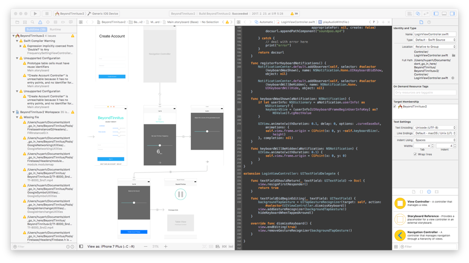
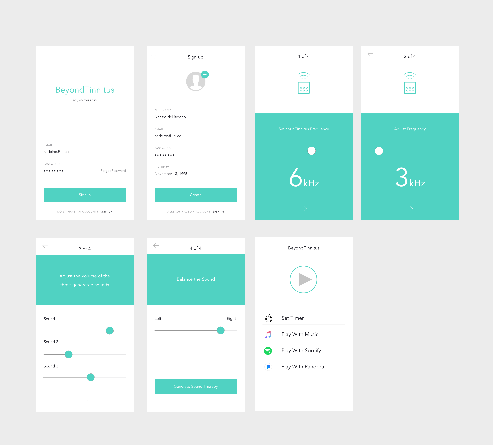

If you or anyone you know is struggling with Tinnitus, a medical condition associated loud ringing in the ear, you understand that currently there is no cure, and doctors often say, “There is nothing we can do about it, you just have to live with it.” With that, the UCI School of Medicine came to ask me to build a mobile application that could potentially be a solution.
UCI School of Medicine
iOS, Swift, Firebase
December 2016 - February 2017
BeyondTinnitus works by taking user input to calibrate their frequency of the ringing sound in their ear, and then with the formula is given by the doctor, we calculate what frequency is required to offset the user's frequency in the ear. The app plays the matching frequency, and for users, hearing the frequency masks the ringing they currently hear in their ears, mitigating it to a soft and manageable white noise. Users can then play music or watch videos on their application without having to worry about any distractions from their condition. 
We decided on iOS because that was an area in which I had a lot of experience. I also already knew of libraries that were readily available to use, as an iOS developer. In the beginning, we tried to generate frequencies using the iOS built in framework, AVFoundation. There were APIs I could use to manually generate sound; all we needed was to manipulate a range of pure frequencies. Unfortunately, we found that creating bands of frequencies took a lot of memory, and so the produced tone did not sound the way we wanted, as the playback contained lots of lag. We then tried finding other ways to produce a better sound and ended up discovering that MATLAB can create the sound files. Since MATLAB is built for computing in engineering and science, it had built in APIs for generating mixes of frequencies and then imported the files into the Xcode project itself. 
The project and coding itself wasn't the challenging part, but rather finding an optimal way to generate and play the sounds. In retrospect, this was a fun project where I actually got to completely build and ship a product, but understanding the limitations of the high-level iOS frameworks would have really been helpful.